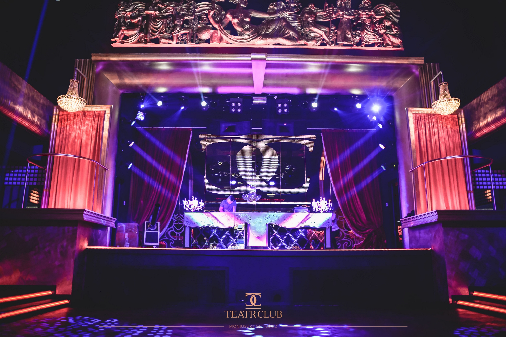
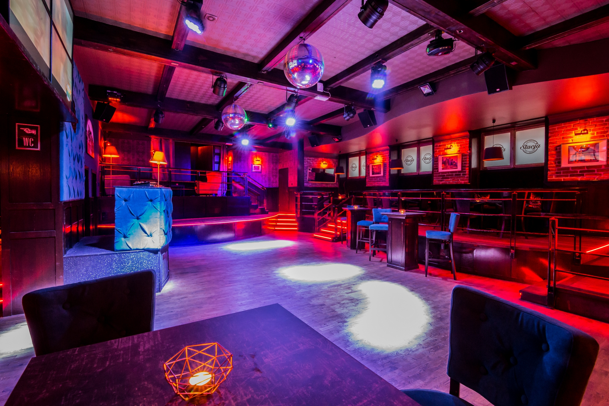
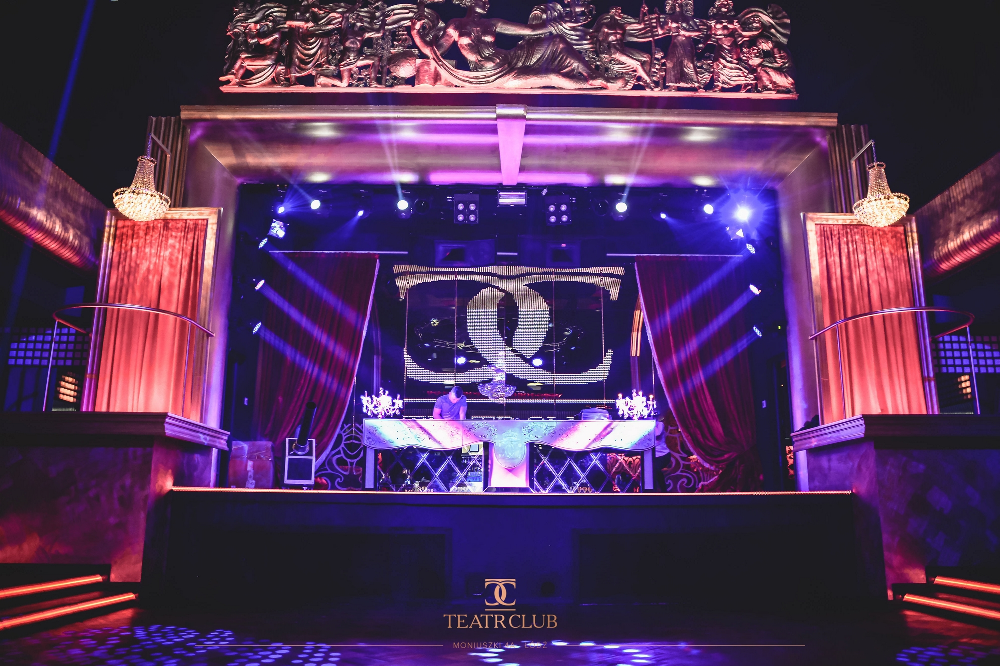

Party
El Cubano is a club with a tropical atmosphere, inspired by Cuban culture. The decor is filled with palm trees and exotic accessories, creating a sunny atmosphere. The club can accommodate up to 300 people, including 120 seats. It is divided into three areas, including a separate VIP room for 40 people and a patio for smokers. The club has a large dance floor with a stage for performers. El Cubano is ideal for smaller corporate events and onboarding meetings.

Klub Teatr, on the other hand, is a space of more than 1,500 m² with a separate VIP area, a large mezzanine and a life-size stage. The club was designed to resemble a real theatre, with red carpets, theater-quality materials and curtains, and sparkling crystal chandeliers hanging from the ceiling. The dance floor can comfortably accommodate over 500 people, and there is seating for an additional 100 people. The club also has a main bar built in the shape of an island, accessible from anywhere in the club. The VIP area is the most prestigious, located at the back of the stage and separated by huge windows, with a bar and separate toilets. It can accommodate up to 80 people. it also has a smoking area located on the upper floor.
About the entry requirements, of course you have to be sober. Allow 35 PLN (9 Euro) for the entry and storage of your coats, for the drink you have a wide range of choices ranging from soft liquors such as craft beers or water, to vodka shots and or Bottles strong enough to blow your mind.
Both clubs offer a unique nightlife experience and are popular places for entertainment in Łódź. Customers can choose between the tropical atmosphere punctuated by a few waves of Bachata, Salsa and more Samba from El Cubano or the grandiose atmosphere of a real theater at the Klub Teatr, characterized by Hip-Pop and Techno music. El Cubano and Klub Teatr are waiting for you to offer you an unforgettable experience.
www.clubteatr.pl
El Cubano & Klub Teatr
Do you want to have fun? do you have a preference for the techno style of music or are you more comfortable with Latino music? or just like me you are undecided? so stop thinking and follow me! In this article where I present to you two diamonds in terms of vibe that are El Cubano and or Klub Teatr.
Located respectively at Gen. Romualda Traugutta 3/11,90-102 Lodz and Stanislawa Moniuszki 4A,90-111 Lodz, El Cubano and Klub Teatr are two popular night clubs in Łódź, Poland. other and better still you have the possibility of joining one or the other via steps built for this purpose. Although the two clubs offer very different experiences, they both have something unique to offer customers.

El cubano general view.
El Cubano is a club with a tropical atmosphere, inspired by Cuban culture. The decor is filled with palm trees and exotic accessories, creating a sunny atmosphere. The club can accommodate up to 300 people, including 120 seats. It is divided into three areas, including a separate VIP room for 40 people and a patio for smokers. The club has a large dance floor with a stage for performers. El Cubano is ideal for smaller corporate events and onboarding meetings.

Teatr Podium.
Klub Teatr, on the other hand, is a space of more than 1,500 m² with a separate VIP area, a large mezzanine and a life-size stage. The club was designed to resemble a real theatre, with red carpets, theater-quality materials and curtains, and sparkling crystal chandeliers hanging from the ceiling. The dance floor can comfortably accommodate over 500 people, and there is seating for an additional 100 people. The club also has a main bar built in the shape of an island, accessible from anywhere in the club. The VIP area is the most prestigious, located at the back of the stage and separated by huge windows, with a bar and separate toilets. It can accommodate up to 80 people. it also has a smoking area located on the upper floor.
About the entry requirements, of course you have to be sober. Allow 35 PLN (9 Euro) for the entry and storage of your coats, for the drink you have a wide range of choices ranging from soft liquors such as craft beers or water, to vodka shots and or Bottles strong enough to blow your mind.
Both clubs offer a unique nightlife experience and are popular places for entertainment in Łódź. Customers can choose between the tropical atmosphere punctuated by a few waves of Bachata, Salsa and more Samba from El Cubano or the grandiose atmosphere of a real theater at the Klub Teatr, characterized by Hip-Pop and Techno music. El Cubano and Klub Teatr are waiting for you to offer you an unforgettable experience.
Sources
www.clubteatr.pl